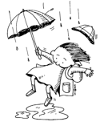
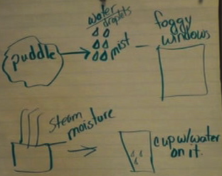

The responsive teaching and learning presented below occurred prior to the publication of the NGSS; however, students were nonetheless engaged in efforts called for by performance expectations. Here we share an example of a class exploring the water cycle and developing a model for water in air.
Click here to see the dimensions showcased in this case study and the other case study surrounding the water cycle.
Carolyn taught 5th grade in a suburban public school. To begin an exploration of the water cycle, her class considered the following question:
| One night it rains. When you go to school the next day, you notice a large puddle of water on the driveway. Later that day, when leaving school, you notice that the puddle is gone. What could have happened to the puddle? |  |
Students immediately brought up ideas about evaporation, and the class pursued this for a few periods. Below is a video snippet of one student, Lily, talking about water from the puddle going into the air.
Video 1: Puddle water goes into the air.
Examining the video. Tiny pieces of water in the air was a common idea in the classroom, occurring in the contexts of fog, steam, and water vapor. Why might this idea be relevant to discussions about how condensation happens? How do Lily's comments relate to the crosscutting ideas mentioned above?
The remaining videos showcase a session several days later. Carolyn asked her students about condensation that had formed on the outside of a cold drink. What followed is shown below:
Video 2: Initial models for condensation.
Examining the video. What are the models for condensation that are proposed by Mariah and Alex? How do Mariah's and Alex's models align with the core idea stated above? What scientific practices are Winston, Mariah, and Cameron engaged in during the second video segment? What seems to be Cameron's model for how the condensation happens on the outside of the cup?
Carolyn visited with groups as they worked together on how the condensation happened. In the video here, two groups share a similar idea:
Video 3: Moisture in the air.
Examining the video. What ideas are proposed by the two groups? Do any of the students' comments relate to the crosscutting concepts mentioned at the top of this page?
When Carolyn reconvened the class, they began to go over the models proposed by students. In the next video, Carolyn thinks that the class has decided against the sweating model, but some students have a strong reaction.
Video 4: The sweating model.
Examining the video. What is Cameron's model and how does he justify it? Is his model plausible or sensible? How is Karin's response scientific? Why is it important to encourage students to share ideas even if they do not align with ideas accepted by the scientific community?
Students continued to share and discuss. Eventually, coldness in the cup attracted moisture in the air to form water on the cup seemed to be the prevalent model for condensation. Carolyn thought students were ready to synthesize their ideas about condensation with the other aspects of the water cycle that they had explored. She asked students to put all of this into their journal using words and pictures. At the right is one student's synthesis. The video below shows some of their responses: |
 Analise's synthesis |
Video 5: Synthesis of ideas.
Examining the video. How are Karin, Analise, and Alex making use of the core idea stated in the introduction at the top of this page? Is there evidence of the crosscutting ideas in the fifth grade NGSS section on the Structure and Properties of Matter?
Examining the video further. Looking at the entire set of videos on this page, how are students engaging in scientific practices to develop science ideas? How is Carolyn responsive to students' emerging ideas as she facilitates this session?
Delving deeper. After thinking about the questions above (or better yet, discussing them too!), delve deeper into Carolyn's class.